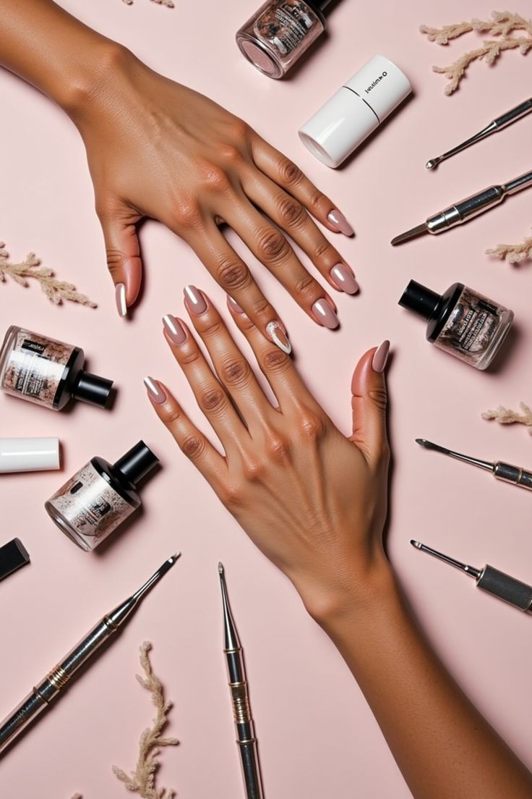
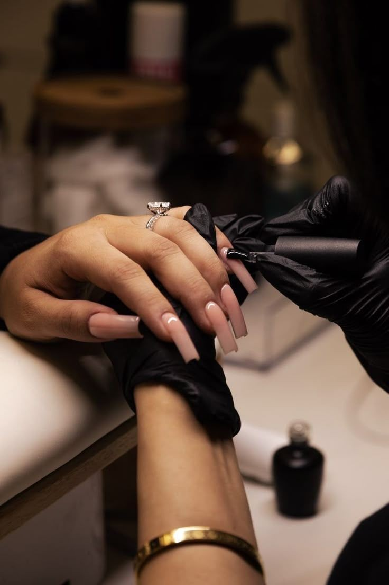

Mengapa Harus
Chewy's Nail Art?
Chewy’s Nail Art adalah studio kecantikan yang selalu mengedepankan service profesional bagi customer kami. Kami menggunakan bahan berkualitas tinggi dan teknik seni kuku terkini untuk memastikan hasil yang indah dan tahan lama.

Total 12 Artist & 500+ Clients
Best Quality Explore Us
Chewy’s Nail Art adalah studio kecantikan berlegalitas yang selalu mengedepankan service excellent profesional bagi customer-nya. Kami selalu berusaha memenuhi segala kebutuhan perawatan kecantikan dengan tetap menjaga komitmen untuk memberikan hasil terbaik.